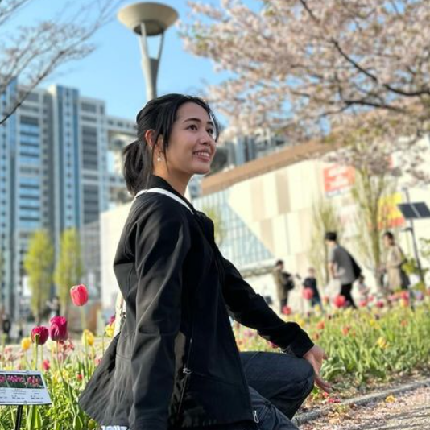
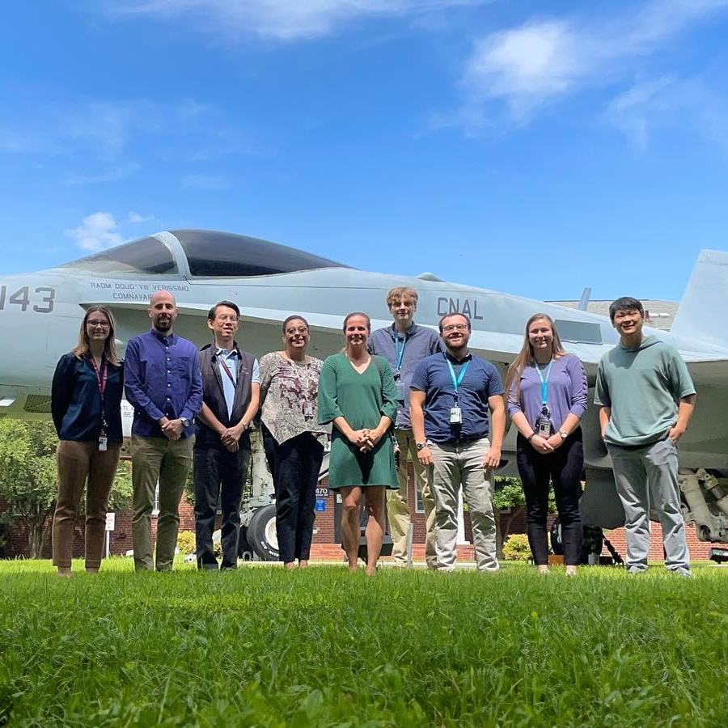

Alan's Journey
Head of the Hanyang Koo Clan
Alan was born to the name "구민섭" (Koo, Min Sub) in South Korea. For the first year of his life, he was raised in the Korean foster care system. He was one of the last kids at the adoption center to get a home! According to the Korean Family Registry, he is the head of the Hanyang Koo Clan in South Korea (since he is the only member)
Adopted to America
The Averett's adopted Alan and brought him to Phoenix Arizona in the United States. He became the youngest of 5 children. His mother's family was from California and Mexico and his father's family from Wyoming. Throughout his life, his mother worked in education and his father worked in sales with companies across India and Asia. Before living in Arizona, the four Averett children before Alan were raised in Springfield, Ohio! A small town in the midwest

Eagle Scout in Texas
While Alan was growing up in Texas, he joined the Boy Scouts of America, serving as the Scribe in his troop. In 2018, he earned the rank of Eagle Scout. His Eagle Scout project was to run community service events partering with the Pajama Program for disadvantaged youth in the local Austin area.

Music in the Marching Band
Even though Alan was the only child not to take piano lessons, that did not stop him from pursuing piano. Alan learned piano by ear and learned from mimicking YouTube videos.
In highschool, he was involved in the marching band, learning how to play the keyboard, battery, and auxiliary percussion. He was also involved in chorus as a tenor and bass, singing for the varsity choir.
Alan joined a band where he played the drumset and keyboard, though it was pretty short-lived.

Competing in the Business Club
Alan, along with his friends, joined and competed in his school's business club, called DECA. He helped run a public relations campaign, partnering with TerraCycle, an innovative recycling company that has become a global leader in recycling hard-to-recycle materials. They won regional, state, and went on to compete at the international level in Atlanta, Georgia.

Taekwondo to Tire Repair
Alan has always been eager to work from a young age. In Texas, he took on a variety of jobs- working at a bakery (as a dishwasher), instructing at a martial arts studio, and fixing tires as a tire repair technician.

Volunteer work in Maryland
After Alan graduated, he spent a year volunteering full-time for his Church as split between a technology consultant, and a volunteer in the humanitarian aid program helping those in the clergy and congregation better use technology for outreach and communication and helping those in need. During this time, he learned how to effectively communicate with others, work in a team, and solve problems. He also improved his Spanish to speak fluently.

Data Science and Statistics
When Alan entered university, he ultimately decided to study data science since it combined his interests in statistics, and computer programming. During his studies, he was involved in the Data Science Society where he served as President. He was a TA for five courses in the Mathematics Department and ran the data science lab where he trained tutors and helped students with their data science projects. He even won a few hackathons!

Hispanic Scholarship
During university, Alan was a founding member of SHPE, the Society of Hispanic Professional Engineers. Though not a typical Hispanic person, since he had Hispanic heritage from his mother, he could better relate to the Hispanic experience and community. He was awarded the SHPE BYUI National Convention Scholarship from Si Se Puede Scholarship Foundation on top of being a full Pell Grant recipient.

Pollster in DC
A pollster in Washington DC hired Alan as a Data Science Intern. He worked right on Capitol Hill to help garner information about the 2022 midterm elections. He analyzed voter data trends, applying them to machine learning models.

Visiting Fellow at the Youth in Policy Institute
Unrelated to his work as a pollster, Alan is also a Visiting Fellow at the Youth in Policy Institute. He worked with a team of youth and young adults to research and write policy papers on issues affecting youth in the United States.
The Best Decision of His Life
Alan met Audrey Mae in the same data engineering class. After some skateboard dates and boba, Alan knew she was the one. Alan proposed to Audrey in Tokyo Japan, and they were married in a court house in Salt Lake City, Utah. Audrey Mae happened to be a better data scientist and data engineer than Alan, working as a data engineer for a health data company in Utah.
Full-time Job with the Navy
Alan was hired as a Data Scientist at Booz Allen Hamilton in Norfolk, Virginia. He was able to help the Navy gauge readiness for Nuclear-powered Aircraft Carriers.
